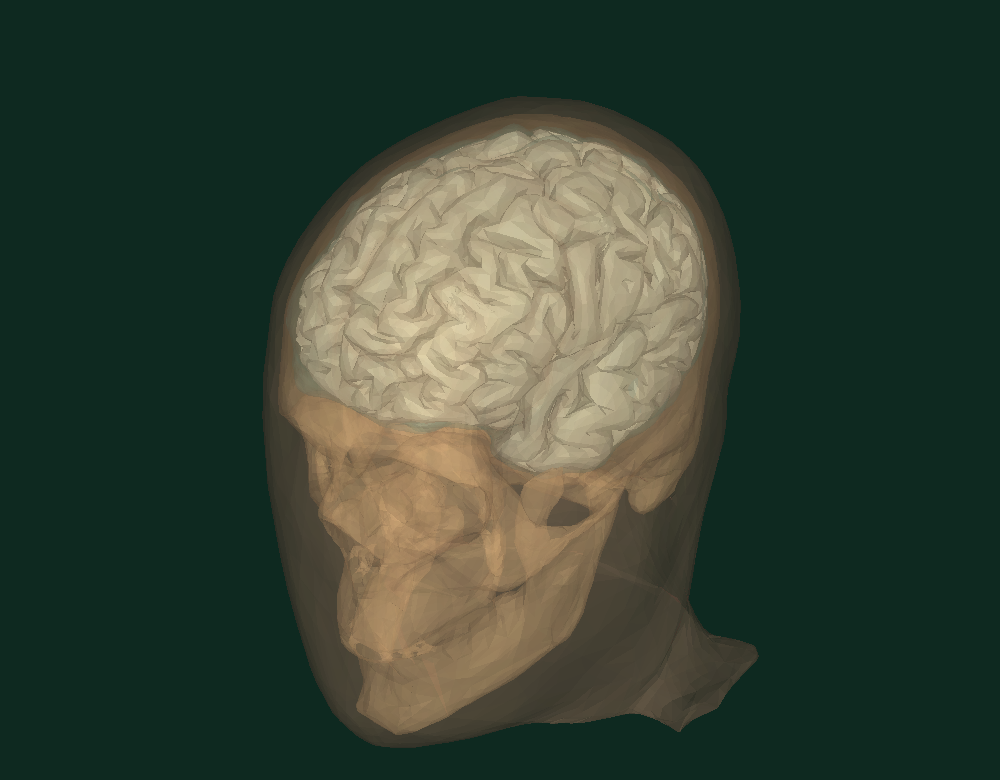
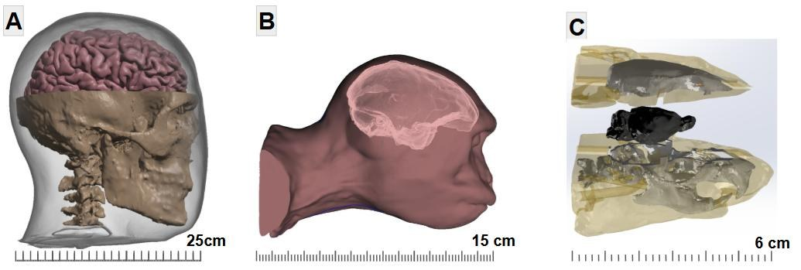
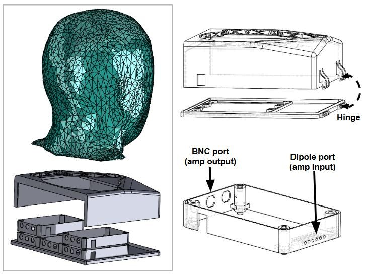
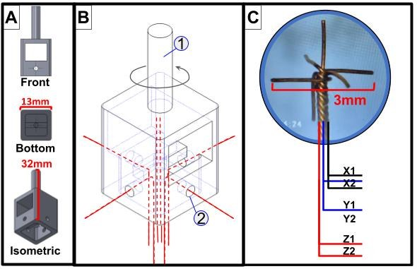

CAD built around functional constraints.
Medical imaging, electrical boundaries, fabrication tolerances, serviceable assemblies and sensor placement all influence how I model devices. This gallery connects anatomical geometry to the fixtures, tooling, and electronics needed to manufacture it.
Main interactive showcase
Explore a layered head assembly.
Rotate the model and isolate anatomical layers to inspect geometry prepared for physical fabrication and sensor integration.
INTERACTIVE ANATOMICAL ASSEMBLYDrag to orbit · scroll to zoom

Simplified anatomical mesh for interactive exploration.
Choose a related area
Explore the CAD library.
Start with the three areas most represented in the dissertation and supplied model files.

01 / MODELING
Head models
Human, rhesus macaque and rat reconstruction, including Figure 7 subfigures.
Explore section
02 / MECHANICAL
Fixtures & tooling
Injection molds, probe anchors, enclosures and laboratory fixtures.
Explore section
03 / COMPONENT CAD
Electrode interfaces
Probe geometries, miniature sensing assemblies and electrical interfaces.
Explore section